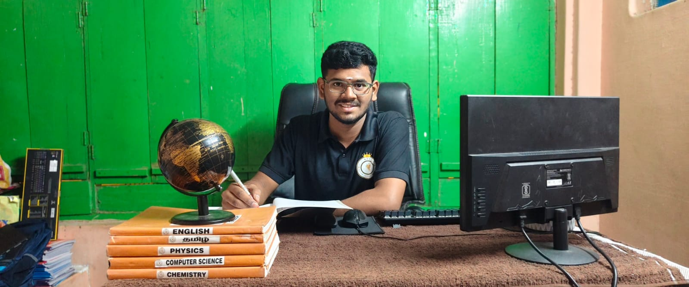

Meet the person behind Kalam Tuition Centre, committed to thoughtful, student-first learning.

FounderOur Founder started Kalam Tuition Centre with a simple aim — to give students in Komarapalayam and Bhavani the individual attention they deserve. The centre focuses on building strong fundamentals, improving confidence, and helping students understand concepts rather than simply memorising answers.
"A student who understands the concept will always outscore one who's just memorised the answer."
Visit either branch or reach out — we're happy to discuss how we can support your child's learning journey.